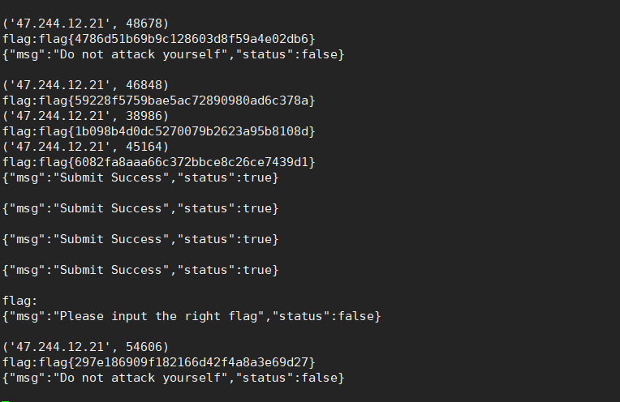

写在之前
八月份星盟内部一共打了三次训练赛,靠抱大腿,成绩都还可以,都在前几名,最后一次更是靠着缘分拿到第一.(我们是冠军!滑稽
之前也打过几次其他比赛的AWD,不过都是挨打那种.
三次AWD我主要负责自动化攻击以及权限维持.
简单复盘一下这三次AWD心路历程以及技术细节,记录下如何用正确的姿势抱住大腿.
第一次
因为平台bug,没有给我们队下发docker,又因为运维师傅手抖,checkdown多打了个两个0.上来就扣了3000分.勇夺倒数第一.
后来拿到ssh,一道web一道pwn.web是一个钓鱼网站的源码,除了设置的后门之外应该还有漏洞,但是在较短时间内没有队伍审计出来.
然后队里有究极强的pwn师傅(@Alkaid) ,在我写出自动化脚本前就把pwn的exp弄出来了,大概十分钟出头.
web题则丢到d盾里一扫,找到几个后门,有一个assert的后门一直利用到比赛结束都有几个队没有修.
就靠着pwn和web的后门,写成自动化脚本提交.
WAF用的是@小远师傅的批量include+流量记录+黑名单阻断的waf.功能还不错,wab的攻击流量都能抓到.
运维操作失误没给web目录写文件的权限,导致不死马这些都没法使用,所以我们清理干净后门之后就不再失分.
最后运维把误扣的分加回去,莫名其妙到了第三.
总得来说,这一次就靠着二进制大佬的大腿,以及@小远师傅快速的给出web的poc.我连权限维持都没有做,尴尬
因为有师傅写了更全面完整的,就不写具体情况了.漏洞细节参考大佬文章,记一次AWD反杀之旅.我们队并没有特别的手段,靠着稳健苟到第三.
第二次
这是官方wphttps://share.weiyun.com/5dxQUSz ,都是人为设置的漏洞,并没有什么特别新颖的漏洞.
中间隔了一周,第二次吸取上次没有做权限维持的教训,折腾了下一些简单的权限维持手段,(会单独写一篇文章交流思路和代码),虽然最后没有用上.
还是老套路,web丢d盾找后门,快速自动化攻击.
因为平台没变,上回的脚本的部分代码可以重复利用.
这回开的一道pwn题两道web题,其中一道是thinkphp框架,原本以为会有tp的洞,但是除了两三个后门之外并没有其他的漏洞.
这次waf用的是另一个师傅的,因为checkdown比较宽松,所以就把全部响应换成一个假flag了.
其中一个洞设置的比较明显,还需要反序列化.在我们写出poc之前就被清理干净了.另外一个任意文件读取以及变量覆盖的漏洞设置的也很明显,但是利用方式较为简单,直接就拿出来刷分.
这里遇到有队师傅思路很骚,任意文件读取漏洞上放了一个1个g的文件,如果单线程用脚本跑,直接就卡主了.我也中招了浪费了好几轮时间.这是个很有趣的搅屎思路.
另外一套web题也是类似的情况,存在变量覆盖漏洞或者sql注入得到md5,cmd5解密得到密码或者爆破密码登陆后台,然后通过任意文件上传getshell.
第二道web题我们并没有第一时间找到poc,只是修复了sql注入以及弱密码,但是还是很快被人上传了不死马.
最开始不死马文件名还是不变的,写了个sh脚本删除文件,然后重启apache服务终结不死马进程.但是实际上有可能被别人条件竞争执行命令,建议不要用这种办法.
过了几轮,web目录每个下面塞满了不死马.我们还是通过脚本正则匹配文件名删除不死马重启apache的方式清理.清理的sh脚本如下:
1 | while true |
这回pwn师傅没能成功给出exp,但是也修复了漏洞,少掉一个失分点.
这次因为手慢了,能执行代码的漏洞大家都修复了,只能利用到读文件的漏洞,任意文件上传的洞没用上,所以权限维持的手段没用到.只能苟住自己的分,靠着读文件的洞在几个萌新队那里刷分.
最后排名我记得是第五还是第六.
第三次
web题目链接以及wp:https://share.weiyun.com/5nZd7c0
这次也算是靠缘分的反杀之旅了.
这次我们队里的二进制师傅修完洞就身体不舒服先走了.所以得分全部靠web,以及后期权限维持住的得分.
这回的web题出的稍微好了一点,几个洞都是d盾扫不出来了.
漏洞详情就看官方writeup吧,我就说一下我们是如何做的.
经过一开始的手忙脚乱,浪费了40分钟时间,但是幸运的是,我们的数据库挂了,只被checkdown,没被乱入,第一个小时排名是靠后的.
队里的师傅@12end和@小远 几分钟就各给出了poc,一个是phpmyadmin的任意文件读,一个是异或后门.
phpmyadmin的洞需要登录,弱密码又很快就被修复,遂没有批量化这个漏洞.
一开始写提交脚本的时候卡了20分钟,浪费了大量时间,排名在中游水准.
完成自动化后排名慢慢上升,在第三第四的位置.
这回用上了之前写的权限维持的工具.找到vps开一个socket的接口,每当有flag传过来就自动提交flag.
然后通过crontab写后门, 每分钟自动nc传输flag到我的远程服务器.

大概有四五支队伍种了crontab后门,排名稳定在前三.
比赛大概进行到两个小时左右,前几名的战队开始用pwn拿分了,但是我们的pwn选手生病了.比分被拉大.
这时候我就想着,反正我有crontab后门了,那我就帮其他队修一下漏洞.于是批量帮助其他队伍删除了异或免杀后门.
这时候,我一看提交记录,好巧,被我种了crontab后门的队伍正好是第一第二第五名.
删除掉官方后门后,大部分队伍不再拿到web的分.只有我们和少数几只队伍拿着零星的分.
其他队伍最后还能拿的分应该是mysql读文件的那个洞.在最后二十分钟我们抓流量拿到了payload,但是显然来不及搭建环境和写脚本了.
最后排名停在第一.有些时候,缘分到了,分就来了.咋一共拿到四个后门,就是125名呢?
总结:
权限维持做的不够好,讲道理应该不死马,dns隧道,ssh隧道之类的都用上的.但是一时心急,忘了留shell,只有一个crontab后门反弹flag,如果别人删除了后门,我自己也没办法再getflag.
总结
连续打了三场,提升还是很大的.
AWD最关键的点就是手速,自动化以及权限维持.漏洞挖不倒没关系,上了waf抓流量就好.
自动化和权限维持一定要快,方式要多.让别人一时半会儿找不到,清不完.如果和勒索病毒挖矿木马有过捉迷藏经验的小伙伴一定体验过那种痛苦.
这是提交flag的代码:
1 | def subflag(flag): |
至于权限维持,会单独写一篇文章详细交流.
还有一个点很关键,就是找个腿粗的pwn师傅.以及最关键的缘分,缘分到了,你手里的后门一定是比你排名靠前的.